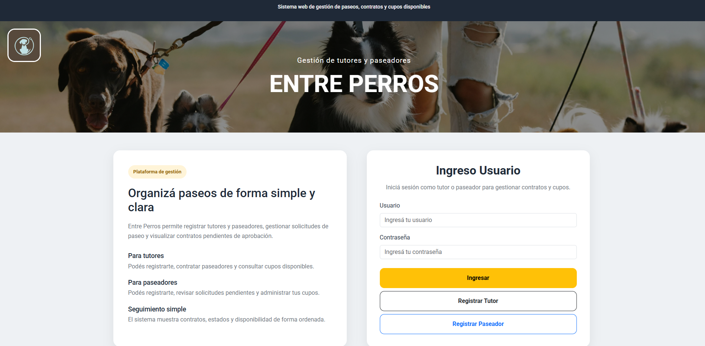
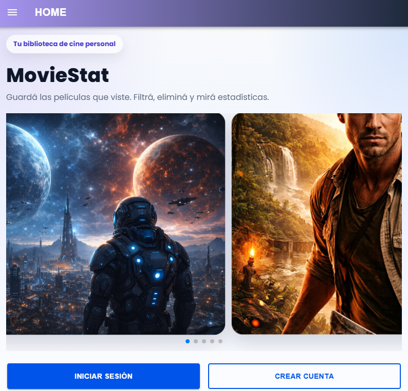
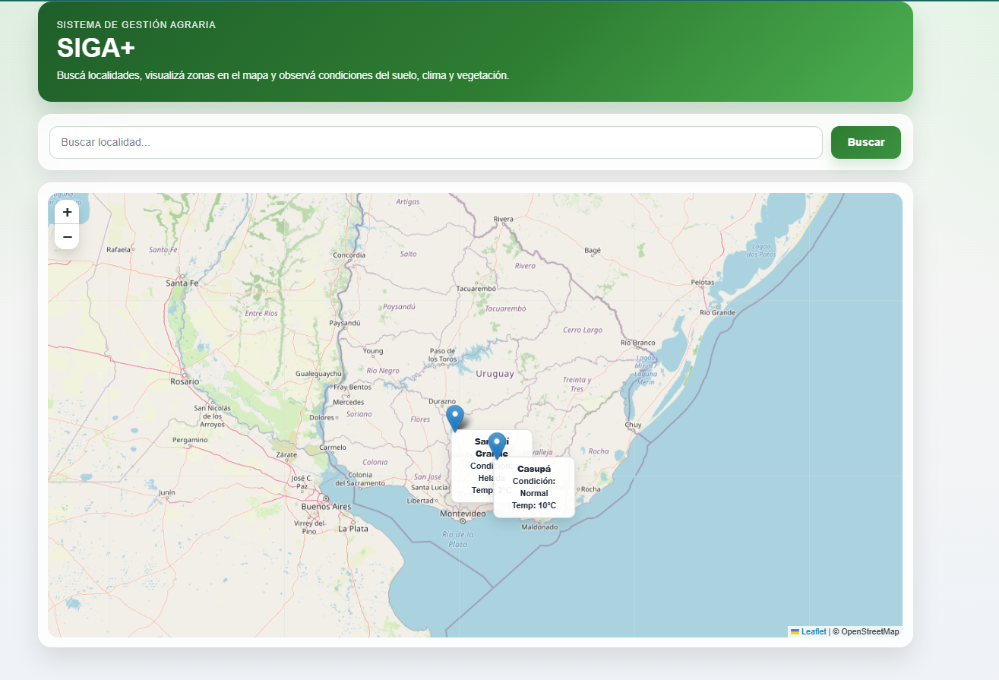
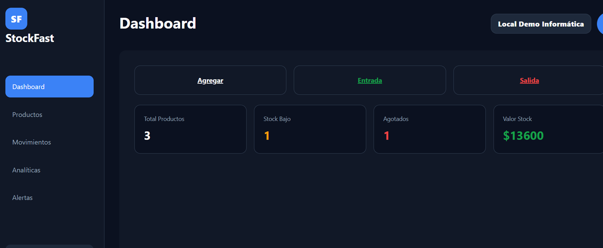
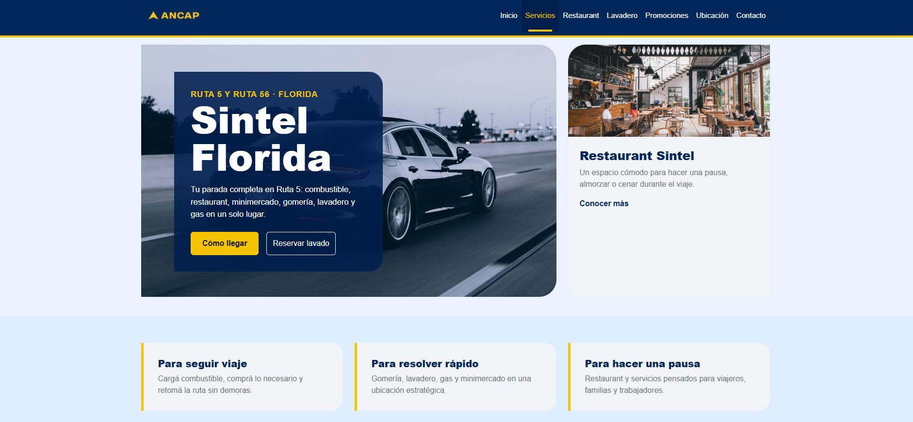
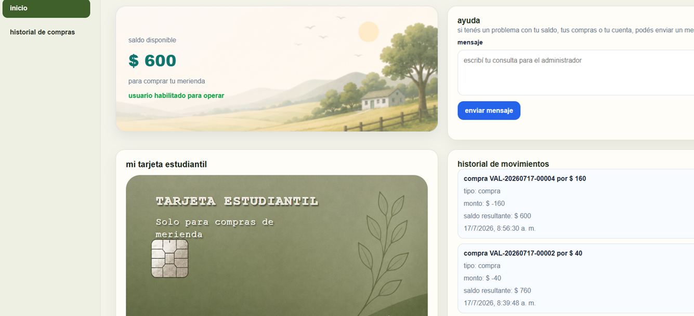
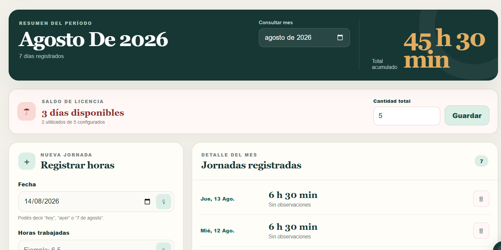

Proyectos
Algunos trabajos que demuestran mis habilidades en desarrollo web.

EntrePerros
EntrePerros es una aplicación web orientada a conectar tutores de perros con paseadores, permitiendo gestionar contrataciones, aprobación de servicios y seguimiento de solicitudes dentro de una plataforma centralizada. El sistema fue desarrollado aplicando principios de programación orientada a objetos, lógica de negocio estructurada y validaciones de datos, simulando un entorno real de gestión de usuarios y contratación de servicios. JavaScript, html,css y boostrap

MovieList
Aplicación mobile para catalogar películas vistas. Integra APIs, un sistema de IA para analizar comentarios y decidir si una película se incorpora o no al catálogo, además de geolocalización de usuarios y analítica. Html,css, ionic, JavaScript.

SIGA+
SIGA+ es una aplicación web de monitoreo agroclimático desarrollada con HTML, CSS, JavaScript y Leaflet.js, diseñada para visualizar información geográfica y climática de distintas zonas en un mapa interactivo. El proyecto permite buscar localidades, explorar polígonos territoriales y consultar datos dinámicos mediante la integración con APIs externas de clima y geolocalización, ofreciendo una herramienta visual e intuitiva para el análisis territorial y ambiental en entornos agrícolas. La solución fue propuesta personalmente a INIA GRAS, donde despertó interés por su potencial como herramienta de apoyo al análisis agroclimático. Actualmente se encuentra en una versión beta funcional, y cuenta con el acompañamiento y apoyo de INIA GRAS durante su proceso de desarrollo y mejora.

StockFast
StockFast es una aplicación web de gestión de stock desarrollada como solución SaaS orientada a comercios, locales y pequeños negocios que necesitan controlar productos, movimientos, alertas y métricas de inventario de forma simple y rápida.
El proyecto fue desplegado en Somee mediante publicación FTP desde Visual Studio, utilizando hosting gratuito para demostración comercial. También se configuró certificado SSL con Let’s Encrypt para permitir navegación segura por HTTPS y habilitar correctamente funcionalidades del navegador como el uso del micrófono.
Tecnologías utilizadas: ASP.NET Core MVC, C#, Razor, HTML5, CSS3, JavaScript, Bootstrap, sesiones de usuario, publicación FTP, Somee Hosting, certificado SSL Let’s Encrypt y Visual Studio.

Sintel Florida – Landing page comercial
SDesarrollé una landing page moderna para Sintel Florida, pensada como propuesta comercial para mejorar su presencia digital. El sitio presenta sus servicios principales: estación, restaurant, minimercado, lavadero, gomería, gas, promociones, ubicación y contacto.
La página incluye un sistema demo de reserva de lavadero con registro e inicio de sesión mediante JavaScript y localStorage.
Tecnologías: HTML, CSS, Bootstrap y JavaScript.

Billetera Virtual Escolar
Sistema web diseñado para gestionar compras escolares de forma rápida, segura y organizada mediante saldo virtual.
Incluye gestión de usuarios y saldos, registro de compras, historial de movimientos y generación de vales digitales con código QR.
Tecnologías: HTML, CSS, Bootstrap, JavaScript, Supabase y PostgreSQL.

Registro Laboral
Registro Laboral es una aplicación web creada para ayudar a trabajadores a registrar sus jornadas, controlar horas trabajadas y licencias, y generar informes mensuales ordenados.
Fue desarrollada con HTML, CSS y JavaScript, utilizando Supabase para la autenticación y almacenamiento de datos, además de herramientas para generar archivos PDF y códigos QR.
Tecnologías: HTML, CSS, Bootstrap, JavaScript, Supabase y PostgreSQL.
Habilidades
Tecnologías y herramientas con las que trabajo actualmente.
Frontend
Lógica & Programación
Herramientas
Sobre mí
Soy estudiante de Analista en Tecnologias de la Informacion en ORT Ingenieria - Uruguay, con foco en desarrollo web y programación orientada a objetos. Me especializo en construir soluciones claras, eficientes y bien estructuradas, priorizando la calidad del código y la mantenibilidad.
He desarrollado aplicaciones académicas que integran gestión de datos, lógica de negocio y validaciones, aplicando buenas prácticas como separación de responsabilidades y organización modular del código.
Actualmente me encuentro profundizando mis habilidades técnicas y desarrollando proyectos propios con un enfoque práctico, orientado a resolver problemas reales y generar impacto dentro del área IT.

Actualmente Desarrollando
Proyectos en los que me encuentro trabajando actualmente para continuar ampliando mis habilidades técnicas.
SIGA+
Plataforma enfocada en monitoreo y visualización agroclimática mediante mapas interactivos y análisis de datos ambientales.
Sistema de
Gestion Veterinario
Sistema de gestión integral orientado a clínicas veterinarias para administración de pacientes, agenda y tratamientos.
Sistema de
Stock para Comercios
Aplicación orientada a la gestión de inventario, control de productos, actualización de stock y seguimiento de movimientos comerciales.
Sistema de
Gestión de Saldo Escolar
Desarrollo de herramienta informática aplicada al ámbito educativo para optimizar la gestión y seguimiento de saldos escolares dentro del entorno docente.
ServiRed
ServiRed es una plataforma web tipo marketplace que conecta clientes con trabajadores calificados para servicios del hogar, comercios y oficinas. Permite publicar solicitudes, postularse a trabajos, gestionar estados y construir reputación mediante calificaciones entre ambas partes. Tecnologías: Next.js, React, TypeScript y Tailwind CSS.
Contacto
¿Tenés una oportunidad o proyecto en mente? Hablemos.
Email: pirotec50@gmail.com
Ubicación: Montevideo, Uruguay